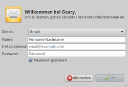
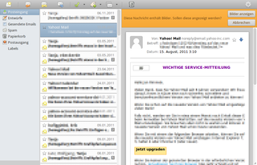
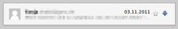
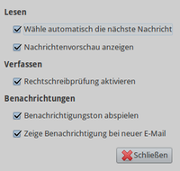

Geary
Dieser Artikel wurde für die folgenden Ubuntu-Versionen getestet:
Ubuntu 16.04 Xenial Xerus
Ubuntu 14.04 Trusty Tahr
Zum Verständnis dieses Artikels sind folgende Seiten hilfreich:
Geary  stammt von den Entwicklern der Bildverwaltung Shotwell und ist ein sehr einfach zu bedienendes E-Mail Programm. Unterstützt werden das IMAP-Protokoll und verschiedene Webdienste wie Google Mail, Yahoo! Mail
stammt von den Entwicklern der Bildverwaltung Shotwell und ist ein sehr einfach zu bedienendes E-Mail Programm. Unterstützt werden das IMAP-Protokoll und verschiedene Webdienste wie Google Mail, Yahoo! Mail  sowie der E-Mail-Server Dovecot. Mit klassischen POP3-Postfächern kann das Programm nicht genutzt werden.
sowie der E-Mail-Server Dovecot. Mit klassischen POP3-Postfächern kann das Programm nicht genutzt werden.
Obwohl für GNOME 3 bzw. die GNOME Shell konzipiert, kann das Programm auch unter anderen Desktop-Umgebungen genutzt werden. Ein vom Konzept her ähnliches Programm war Postler, ebenfalls in Vala programmiert, dessen Weiterentwicklung aber inzwischen eingestellt wurde. Wenn Geary zu "einfach" ist und man Webmail nicht mag: Der Artikel Internetanwendungen enthält eine Übersicht der unter Ubuntu nutzbaren E-Mail-Programme.
Installation¶

Hinweis:
Empfohlen für die tägliche Nutzung wird die stabile Version 0.8 oder neuer.
Geary ist ab Ubuntu 12.10 Bestandteil der offiziellen Paketquellen. Folgendes Paket muss installiert werden [1]:
geary (universe)
 mit apturl
mit apturl
Paketliste zum Kopieren:
sudo apt-get install geary
sudo aptitude install geary
PPA¶
Das offizielle "Personal Package Archiv" (PPA) [2] der Entwickler enthält die aktuelle Version.
Adresszeile zum Hinzufügen des PPAs:
ppa:geary-team/releases
Hinweis!
Zusätzliche Fremdquellen können das System gefährden.
Ein PPA unterstützt nicht zwangsläufig alle Ubuntu-Versionen. Weitere Informationen sind der  PPA-Beschreibung des Eigentümers/Teams geary-team zu entnehmen.
PPA-Beschreibung des Eigentümers/Teams geary-team zu entnehmen.
Damit Pakete aus dem PPA genutzt werden können, müssen die Paketquellen neu eingelesen werden.
Nach dem Aktualisieren der Paketquellen erfolgt die Installation wie oben angegeben.
Bedienung¶
|  |
| Konto einrichten |
Bei Ubuntu-Varianten mit einem Anwendungsmenü erfolgt der Start [3] über den Menü-Eintrag "Internet -> Geary Mail".
Beim ersten Programmstart wird man gebeten, die Benutzerdaten für das gewünschte E-Mail-Konto einzugeben (siehe Abbildung). Anschließend erscheint eine aufgeräumte und auf die wesentlichen Funktionen reduzierte Programmoberfläche. Zur Verfügung stehen:
Nachricht verfassen
Antwort an Absender
An alle antworten
E-Mail weiterleiten
E-Mail markieren
Ausgewählte Konversation verschlagworten
Ausgewählte Konversation verschieben
Ausgewählte Konversation löschen
|  |
| Ordner - Übersicht - Nachrichtenanzeige |
Falls eine E-Mail im HTML-Format verfasst wurde, kann man wählen, ob auch die Bilder in der Nachricht angezeigt werden sollen (Voreinstellung: aus). Ungelesene Nachrichten sind wie üblich fett markiert. Zusätzlich kann eine (Stern-)Markierung gesetzt werden, um bestimmte Nachrichten später einfacher wiederzufinden.
Um in Gruppendiskussionen die Übersicht zu behalten, können einzelne Beiträge innerhalb eines Diskussion (Thread) mit der linken Maustaste  auf- und zugeklappt werden. Beispiel:
auf- und zugeklappt werden. Beispiel:

Ist die entsprechende Option aktiv (siehe Einstellungen), dann erfolgt eine automatische Benachrichtigung bei neuen E-Mails. Geary verwendet dazu die Benachrichtigungsanzeige bzw. den Message-Indikator (Briefsymbol).
Einstellungen¶
|  |
| Einstellungen |
Die Einstellungsmöglichkeiten sind wie die Programmfunktionen sehr übersichtlich. Insgesamt fünf Optionen können hier aktiviert oder deaktiviert werden:
"Wähle automatisch die nächste Nachricht"
"Nachrichtenvorschau anzeigen" - vollständige Anzeige (kein Auf- bzw. Zuklappen)
"Rechtschreibprüfung aktivieren" - siehe auch Rechtschreibkorrektur
"Benachrichtigungston abspielen" - akustische Rückmeldung
"Zeige Benachrichtigung bei neuer E-Mail" - (siehe oben)
 Programmübersicht
Programmübersicht- Erstellt mit Inyoka
-
 2004 – 2017 ubuntuusers.de • Einige Rechte vorbehalten
2004 – 2017 ubuntuusers.de • Einige Rechte vorbehalten
Lizenz • Kontakt • Datenschutz • Impressum • Serverstatus -
Serverhousing gespendet von